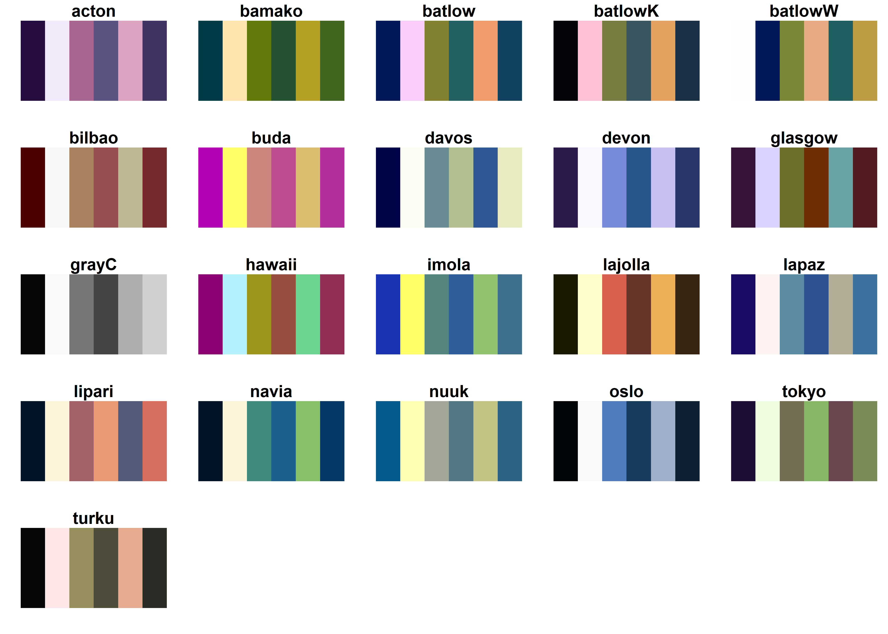
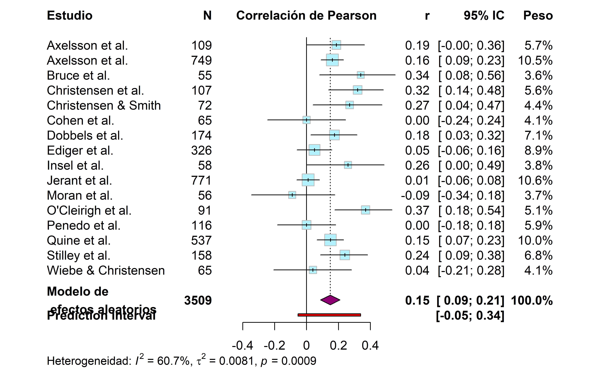
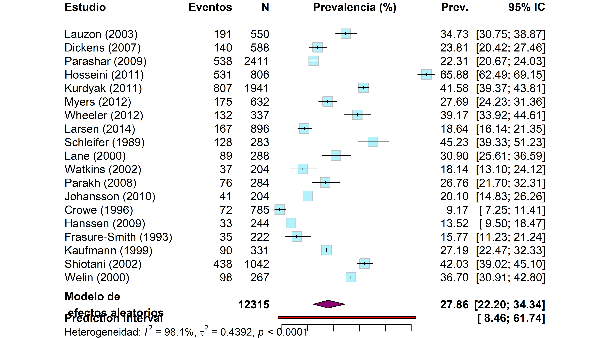
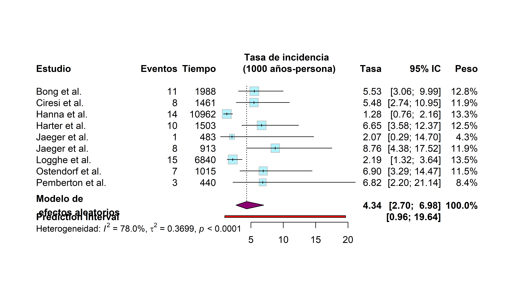

library(meta)
library(tidyverse)
## Datos de ejemplo
library(metadat)Meta-análisis en estudios descriptivos
Tamara Ricardo ![]()
Introducción
En esta sección repasaremos los principales estimadores de efecto utilizados en estudios epidemiológicos descriptivos, junto con ejemplos prácticos para su ajuste e interpretación en R.
Comenzaremos por cargar el paquete meta y la dependencia metadatque contiene datasets de ejemplo. Además, Para facilitar la exploración y manipulación de datos, utilizaremos funciones del paquete tidyverse(Wickham et al. 2019).
Cuando necesitamos trabajar con varios paquetes de R, conviene usar gestores de paquetes como pacman o install.load que permiten cargar/actualizar paquetes existentes e instalar los que no tengamos:
pacman::p_load(
meta,
metadat,
tidyverse,
update = TRUE # Opcional si queremos actualizar paquetes existentes
)Anteriormente exploramos cómo personalizar los colores de los forest plot mediante los argumentos col.diamond y col.square. Para garantizar que los gráficos resultantes sean accesibles a personas con deficiencia en la percepción del color, emplearemos paletas adaptadas (colorblind-friendly) del paquete scico (Pedersen y Crameri 2023):
# Cargar el paquete
library(scico)
# Mostrar paletas categóricas disponibles
scico_palette_show(categorical = TRUE)
En los ejemplos siguientes, emplearemos la paleta "hawaii", que genera un gradiente entre tonos magenta y turquesa:
pal <- scico(n = 3, palette = "hawaii")Estimadores de efecto
En estudios descriptivos, los principales estimadores de efecto son la correlación, la prevalencia y la tasa de incidencia. A continuación, abordaremos cómo ajustar modelos de meta-análisis para cada uno de estos casos.
Correlaciones
La correlación mide la fuerza y dirección de la relación lineal entre dos variables numéricas continuas, y se calcula mediante la siguiente fórmula:
\[ r_{xy} = \frac{Cov_{xy}}{S_xS_y} \tag{5.1}\]
donde:
\(Cov_{xy}\) es la covarianza entre las variables \(x\) e \(y\).
\(S_x\) y \(S_y\) son los desvíos estándar de cada variable.
Dado que los coeficientes de correlación se encuentran en un rango entre -1 y 1, su distribución no es simétrica, lo cual puede afectar la estimación del error estándar en muestras pequeñas. Para corregir este sesgo y estabilizar la varianza, se utiliza la transformación z de Fisher.
La función metacor() permite ajustar modelos de meta-análisis para correlaciones y aplica automáticamente esta transformación cuando se especifica el argumento sm = "ZCOR".
Como ejemplo, utilizaremos la base de datos dat.molloy2014, que recopila resultados de 16 estudios sobre la relación entre concienciación y adherencia a la medicación.
# Cargar datos
datos_cor <- metadat::dat.molloy2014
# Explorar la estructura de los datos
glimpse(datos_cor)Rows: 16
Columns: 10
$ authors <chr> "Axelsson et al.", "Axelsson et al.", "Bruce et al.", "Chris…
$ year <int> 2009, 2011, 2010, 1999, 1995, 2004, 2005, 2007, 2006, 2011, …
$ ni <int> 109, 749, 55, 107, 72, 65, 174, 326, 58, 771, 56, 91, 116, 5…
$ ri <dbl> 0.187, 0.162, 0.340, 0.320, 0.270, 0.000, 0.175, 0.050, 0.26…
$ controls <chr> "none", "none", "none", "none", "none", "none", "none", "mul…
$ design <chr> "cross-sectional", "cross-sectional", "prospective", "cross-…
$ a_measure <chr> "self-report", "self-report", "other", "self-report", "other…
$ c_measure <chr> "other", "NEO", "NEO", "other", "NEO", "NEO", "NEO", "NEO", …
$ meanage <dbl> 22.00, 53.59, 43.36, 41.70, 46.39, 41.20, 52.30, 41.00, 77.0…
$ quality <int> 1, 1, 2, 1, 2, 2, 1, 3, 2, 3, 2, 2, 1, 2, 3, 1Las principales variables de interés son:
ri: coeficiente de correlación.ni: tamaño muestral de cada estudio.authors: identificador del estudio.
Ajustamos un modelo de meta-análisis para correlaciones aplicando la transformación z de Fisher:
- 1
- Coeficiente de correlación para cada estudio.
- 2
- Tamaño de la muestra en cada estudio.
- 3
- Identificador único del estudio.
- 4
- Conjunto de datos.
- 5
-
Estimador de efecto (
"ZCOR"por defecto/"COR"). - 6
-
Ajustar el modelo de efectos fijos (
TRUEpor defecto /FALSE). - 7
-
Ajustar el modelo de efectos aleatorios (
TRUEpor defecto /FALSE). - 8
-
Mostrar resultados en escala original de los datos (
TRUEpor defecto /FALSE). - 9
-
Calcular el intervalo de predicción (
TRUE/FALSEpor defecto).
No es necesario especificar los argumentos common, random, sm, backstransf o prediction a menos que se desee cambiar las opciones por defecto.
El siguiente código genera los mismos resultados que el ejemplo:
metacor(
cor = ri,
n = ni,
studlab = authors,
data = datos_cor,
prediction = TRUE
)Number of studies: k = 16
Number of observations: o = 3509
COR 95% CI z p-value
Common effect model 0.1245 [ 0.0916; 0.1572] 7.36 < 0.0001
Random effects model 0.1488 [ 0.0878; 0.2087] 4.75 < 0.0001
Prediction interval [-0.0534; 0.3393]
Quantifying heterogeneity (with 95% CIs):
tau^2 = 0.0081 [0.0017; 0.0378]; tau = 0.0901 [0.0412; 0.1944]
I^2 = 60.7% [32.1%; 77.2%]; H = 1.59 [1.21; 2.10]
Test of heterogeneity:
Q d.f. p-value
38.16 15 0.0009
Details of meta-analysis methods:
- Inverse variance method
- Restricted maximum-likelihood estimator for tau^2
- Q-Profile method for confidence interval of tau^2 and tau
- Calculation of I^2 based on Q
- Prediction interval based on t-distribution (df = 15)
- Fisher's z transformation of correlationsAnalicemos ahora la salida del modelo:
mod_corNumber of studies: k = 16
Number of observations: o = 3509
COR 95% CI z p-value
Common effect model 0.1245 [ 0.0916; 0.1572] 7.36 < 0.0001
Random effects model 0.1488 [ 0.0878; 0.2087] 4.75 < 0.0001
Prediction interval [-0.0534; 0.3393]
Quantifying heterogeneity (with 95% CIs):
tau^2 = 0.0081 [0.0017; 0.0378]; tau = 0.0901 [0.0412; 0.1944]
I^2 = 60.7% [32.1%; 77.2%]; H = 1.59 [1.21; 2.10]
Test of heterogeneity:
Q d.f. p-value
38.16 15 0.0009
Details of meta-analysis methods:
- Inverse variance method
- Restricted maximum-likelihood estimator for tau^2
- Q-Profile method for confidence interval of tau^2 and tau
- Calculation of I^2 based on Q
- Prediction interval based on t-distribution (df = 15)
- Fisher's z transformation of correlationsEl valor de \(I^2\) indica que los datos presentan una heterogeneidad moderada y debe descartarse el modelo de efectos fijos.
A diferencia de lo que vimos para datos precalculados, la salida nos muestra no solo el número de estudios incluidos (k) sino también el número total de observaciones (o).
De acuerdo al modelo de efectos aleatorios, existe una correlación positiva baja entre la concienciación y la adherencia a la medicación. Sin embargo, el intervalo de predicción incluye la posibilidad de que futuros estudios reporten correlaciones negativas.
Generamos el forest plot para visualizar los resultados:
- 1
- Omitir modelo de efectos fijos.
- 2
- Personalizar etiqueta del estimador de efecto.
- 3
- Personalizar etiquetas del panel izquierdo.
- 4
- Personalizar etiquetas del panel derecho.
- 5
- Personalizar etiqueta indicadores de heterogeneidad.
- 6
- Personalizar etiqueta del estimador global.
- 7
- Mostrar intervalo de predicción (opcional).

Prevalencia
La prevalencia representa la proporción de individuos con un evento de interés dentro de una población:
\[ p = \frac{k}{n} \] {#eq-2}
donde:
\(k\) es el número de individuos con la condición/evento.
\(n\) es el tamaño total de la población o muestra.
Dado que las proporciones pueden estar cercanas a los valores extremos (0 o 1), su distribución es asimétrica, lo que afecta el cálculo del error estándar. Para corregir este problema, se aplica una transformación logit a los datos.
La función metaprop() permite ajustar modelos para prevalencias e incorpora automáticamente esta transformación con el argumento sm = "PLOGIT".
Para ejemplificar, usaremos la base de datos dat.feng2019, que contiene resultados de 19 estudios sobre la prevalencia de depresión luego de un infarto de miocardio:
# Cargar datos
datos_prev <- Feng2019
# Explorar estructura de los datos
glimpse(datos_prev)Rows: 19
Columns: 13
$ author <chr> "Lauzon", "Dickens", "Parashar", "Hosseini", "Kurdyak", …
$ year <int> 2003, 2007, 2009, 2011, 2011, 2012, 2012, 2014, 1989, 20…
$ region <chr> "Canada", "UK", "USA", "Iran", "Canada", "Israel", "Aust…
$ design <chr> "Longitudinal", "Longitudinal", "Longitudinal", "Longitu…
$ source <chr> "Hospital-based", "Hospital-based", "Hospital-based", "H…
$ age <dbl> 60.0, 60.0, 60.5, 58.0, 62.4, 52.3, 59.0, 67.0, 63.7, 62…
$ males <dbl> 78.9, 70.4, 66.5, 69.0, 70.4, 86.0, 74.0, 69.2, 64.0, 74…
$ first <dbl> 79.1, 84.0, 78.9, 86.9, NA, 88.0, NA, 100.0, 73.0, 78.4,…
$ questionnaire <chr> "BDI≥10", "HADS≥17", "PHQ-9≥10", "BDI≥10", "BCDRS≥4", "B…
$ interview <chr> NA, NA, NA, NA, NA, NA, NA, NA, "ADS", NA, "DIS", "SCID"…
$ timing <chr> "2-3 days", "3.6 days", "24-72 hours", "15 days", "30 da…
$ depr <int> 191, 140, 538, 531, 807, 175, 132, 167, 128, 89, 37, 76,…
$ n <int> 550, 588, 2411, 806, 1941, 632, 337, 896, 283, 288, 204,…Las principales variables de interés son:
depr: individuos con el evento.n: tamaño muestral.author: identificador de estudio.
Vamos a crear la variable id_estudioque contenga el primer autor y año de publicación:
datos_prev <- datos_prev |>
mutate(id_estudio = paste0(author, " (", year, ")"))Ajustamos el modelo de meta-análisis para proporciones aplicando la transformación logit:
- 1
- Casos observados en cada estudio.
- 2
- Tamaño muestral del estudio.
- 3
- Identificador único del estudio.
- 4
- Conjunto de datos.
- 5
-
Estimador de efecto (
"PLOGIT"por defecto, ver ayuda de la función para otras opciones). - 6
-
Calcular intervalos de predicción (
TRUE/FALSEpor defecto). - 7
- Expresar los estimadores de efecto como porcentajes.
Analicemos ahora la salida del modelo:
mod_prevNumber of studies: k = 19
Number of observations: o = 12315
Number of events: e = 3818
events 95% CI
Common effect model 31.0028 [30.1920; 31.8256]
Random effects model 27.8635 [22.1969; 34.3383]
Prediction interval [ 8.4638; 61.7382]
Quantifying heterogeneity (with 95% CIs):
tau^2 = 0.4392; tau = 0.6627; I^2 = 98.1% [97.7%; 98.5%]; H = 7.34 [6.63; 8.13]
Test of heterogeneity:
Q d.f. p-value
Wald 970.42 18 < 0.0001
LRT 1106.39 18 < 0.0001
Details of meta-analysis methods:
- Random intercept logistic regression model
- Maximum-likelihood estimator for tau^2
- Calculation of I^2 based on Q
- Prediction interval based on t-distribution (df = 18)
- Logit transformation
- Events per 100 observationsEl valor de \(I^2\) indica que los datos presentan una heterogeneidad muy alta y puede descartarse el modelo de efectos fijos. El coeficiente del modelo de efectos aleatorios muestra una prevalencia del evento del 27,9%.
- 1
- Omitir modelo de efectos fijos.
- 2
- Personalizar etiqueta del estimador de efecto.
- 3
- Personalizar etiquetas del panel izquierdo.
- 4
- Personalizar etiquetas del panel derecho.
- 5
- Personalizar etiqueta indicadores de heterogeneidad.
- 6
- Personalizar etiqueta del estimador global.

Tasa de incidencia
La tasa de incidencia o incidence rate (IR) se utiliza para eventos que ocurren a lo largo del tiempo y se define como:
\[ IR = \frac {k}{T} \] {#eq-3}
donde:
\(k\) es el número de eventos observados.
\(T\) es la suma del tiempo-persona en riesgo en cada estudio.
Dado que las tasas de incidencia pueden ser pequeñas y asimétricas, se recomienda aplicar una transformación logarítmica a los datos para estabilizar su varianza.
La función metarate() ajusta modelos de meta-análisis para tasas de incidencia, aplicando esta transformación (sm = "IRLN").
Como ejemplo, usamos la base dat.nielweise2008, que contiene 9 estudios sobre la incidencia de infecciones sanguíneas asociadas al uso de catéteres:
# Cargar datos
datos_inc <- dat.nielweise2008
# Explorar estructura de los datos
glimpse(datos_inc)Rows: 9
Columns: 7
$ study <int> 1, 2, 3, 4, 5, 6, 7, 8, 9
$ authors <chr> "Bong et al.", "Ciresi et al.", "Hanna et al.", "Harter et al.…
$ year <int> 2003, 1996, 2004, 2002, 2001, 2005, 1997, 2005, 1996
$ x1i <int> 7, 8, 3, 6, 1, 1, 17, 3, 2
$ t1i <int> 1344, 1600, 12012, 1536, 370, 729, 6760, 1107, 320
$ x2i <int> 11, 8, 14, 10, 1, 8, 15, 7, 3
$ t2i <int> 1988, 1461, 10962, 1503, 483, 913, 6840, 1015, 440Las principales variables de interés son:
x2i: casos observados en el grupo i.t2i: años-persona en riesgo en el grupo i.authors: identificador de estudio.
Ajustamos el modelo de meta-análisis para tasas de incidencia aplicando la transformación logarítmica:
- 1
- Casos observados en cada estudio.
- 2
- Tiempo-persona en riesgo en cada estudio.
- 3
- Identificador único del estudio.
- 4
- Conjunto de datos.
- 5
-
Estimador de efecto (
"IRLN"por defecto, ver ayuda de la función para otras opciones). - 6
-
Calcular intervalos de predicción (
TRUE/FALSEpor defecto).
Analicemos ahora la salida del modelo:
mod_incNumber of studies: k = 9
Number of events: e = 77
rate 95% CI
Common effect model 0.0039 [0.0031; 0.0048]
Random effects model 0.0043 [0.0027; 0.0070]
Prediction interval [0.0010; 0.0196]
Quantifying heterogeneity (with 95% CIs):
tau^2 = 0.3699 [0.0940; 1.5145]; tau = 0.6082 [0.3065; 1.2307]
I^2 = 78.0% [58.4%; 88.4%]; H = 2.13 [1.55; 2.93]
Test of heterogeneity:
Q d.f. p-value
36.38 8 < 0.0001
Details of meta-analysis methods:
- Inverse variance method
- Restricted maximum-likelihood estimator for tau^2
- Q-Profile method for confidence interval of tau^2 and tau
- Calculation of I^2 based on Q
- Prediction interval based on t-distribution (df = 8)
- Log transformationEl valor de \(I^2\) indica que los datos presentan una heterogeneidad alta y debe descartarse el modelo de efectos fijos. El intervalo de predicción muestra que se pueden esperar tasas más altas o bajas en estudios futuros.
El coeficiente del modelo de efectos aleatorio muestra que la tasa de incidencia del evento es muy baja dentro del grupo estudiado, por lo que vamos a expresarla en casos por 1000 años-persona cuando ajustemos el forest plot.
forest(
mod_inc,
col.diamond.random = pal[1],
col.square = pal[3],
1 common = FALSE,
2 smlab = "Tasa de incidencia \n (1000 años-persona)",
3 leftlabs = c("Estudio", "Eventos", "Tiempo"),
4 rightlabs = c("Tasa", "95% IC", "Peso"),
5 hetlab = "Heterogeneidad: ",
6 text.random = "Modelo de \n efectos aleatorios",
7 pscale = 1000
)- 1
- Omitir modelo de efectos fijos.
- 2
- Personalizar etiqueta del estimador de efecto.
- 3
- Personalizar etiquetas del panel izquierdo.
- 4
- Personalizar etiquetas del panel derecho.
- 5
- Personalizar etiqueta indicadores de heterogeneidad.
- 6
- Personalizar etiqueta del estimador global.
- 7
- Expresar coeficientes en casos cada 1000 años-persona.

Referencias
Pedersen, Thomas Lin, y Fabio Crameri. 2023. scico: Colour Palettes Based on the Scientific Colour-Maps. https://CRAN.R-project.org/package=scico.
Wickham, Hadley, Mara Averick, Jennifer Bryan, et al. 2019. Welcome to the tidyverse. 4: 1686. https://doi.org/10.21105/joss.01686.